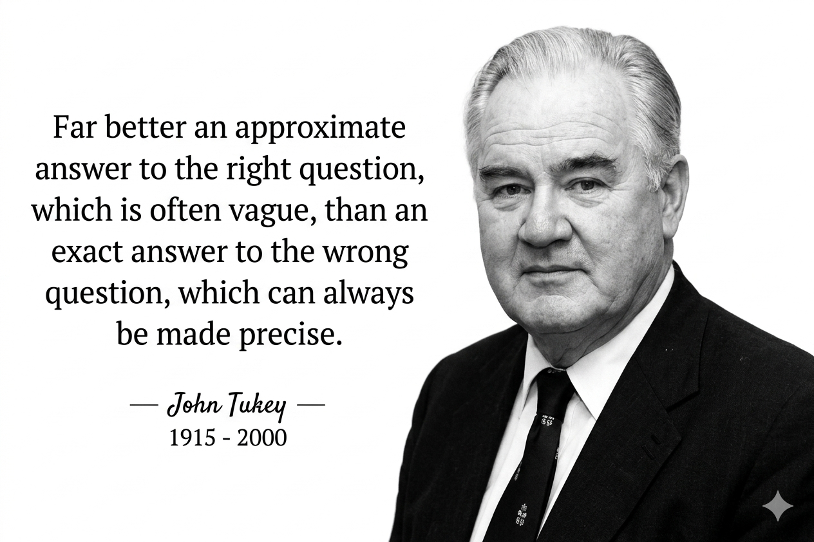
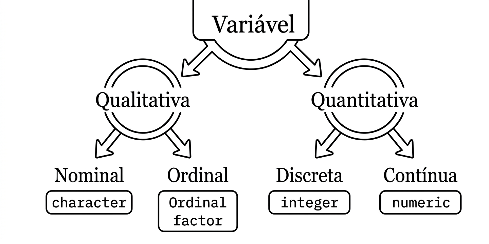

2 Classificação de Variáveis
2.1 Introdução
Em linhas gerais, a análise exploratória de dados (AED) tem ligação direta com a organização e descrição dos dados, reunindo um conjunto de ferramentas que auxiliam na interpretação dos valores observados. No entanto, a utilidade dessas ferramentas — seja para avaliar como as observações se distribuem, onde estão posicionadas ou como se associam — é condicionada pela natureza da variável em estudo.
Antes de calcular uma média ou construir um gráfico, o estatístico deve responder: “O que este dado representa?”. A resposta a essa pergunta nos leva à classificação das variáveis, um passo fundamental que dita quais métodos de exploração são válidos e quais são estatisticamente incorretos.
Neste capítulo, introduziremos os conceitos de classificação e os métodos de exploração adequados para cada tipo, estabelecendo a base para análises estatísticas avançadas.
Em linhas gerais, trata-se de uma característica medida na população ou na amostra. Como exemplos, apresentam-se a altura de um indivíduo, o peso, a temperatura, a cor dos olhos, o número de filhos, a cor das folhas de uma planta, entre outros. São representadas por letras maiúsculas do nosso alfabeto: X, Y, A, B, W.
A Figura 2 apresenta um esquema de classificação das variáveis.

2.1.0.1 Variável Qualitativa Nominal
As variáveis qualitativas nominais apresentam o menor grau de informação dentre os quatro tipos apresentados. É possível apenas a avaliação de frequências e ordenações arbitrárias. O sexo, a religião, a raça, a cor preferida, são exemplos desse tipo de variável.
Exemplo 1: Sexo de uma pessoa
Suponha uma pesquisa com aplicação de um questionário on-line, onde o sexo dos entrevistados é perguntado. Suponha ainda que a variável Sexo de uma pessoa seja representada por X, as observações podem ser:
X:{Masculino, Masculino, Feminino, Masculino, …, Feminino}
Exemplo 2: Raça de um indivíduo entrevistado
Nessa mesma pesquisa, suponha agora que o desejo é conhecer a raça declarada de um indivíduo. Supondo que Y seja essa variável, as possíveis observações são:
Y:{branco, Negro, Pardo, Negro, Indígena, Branco,…,Pardo}
Agora, apresenta-se um exemplo um pouco mais complexo, que pode causar confundimento com a classificação de variável qualitativa ordinal.
Exemplo 3: Causa do óbito ou diagnóstico clínico
Em estudos epidemiológicos, suponha uma variável W representando as causas de óbitos ou diagnóstico clínico. Assim:
W:{Doença cardiovascular, Câncer, Causas externas (acidentes), Doenças infecciosas}
Nessa situação alguém poderia tentar ordenar por gravidade ou letalidade e, portanto, uma nova variável deve ser criada e, a partir disso, uma possível ordenação pode ser realizada. É necessário lembrar que a letalidade muda conforme a idade do paciente, a região, as condições de atendimento imediato, entre outros. Como não existe uma classificação natural única para essas patologias, essa variável é classificada como qualitativa nominal.
O mesmo raciocínio ocorre quando consideramos a área de formação acadêmica. Ordenar por oferta de emprego, maior salário, etc, não é uma ordenação natural nem tampouco única e, portanto, essas são classificadas como qualitativas nominais.
É preciso salientar que nos exemplos citados, assim como tantos outros nessa classificação de variável, não são passíveis de ordenação natural nem representam quantidades ou medidas.
2.1.0.2 Variável Qualitativa Ordinal
As variáveis qualitativas ordinais apresentam um grau de informação maior em relação as nominais porque apresentam duas características extremamente importantes: ordenação natural e única. Nesse, caso, é permitdio a comparações entre observações. Algumas carcaterísticas como “grau de escolaridade”, “classificação de grau de severidade de uma patologia” são exemplos de variáveis dessa natureza.
Exemplo 4: Diagnóstico Clínico de Câncer
Como mencionado no exemplo 3, suponha agora que, para pacientes com câncer, seja interessante medir o grau de avanço (estágio) da doença, representado por um variável X.
X:{0, 1, 2, 3, 4}
ou
X:{gravidade muito baixa (curável), gravidade baixa, gravidade moderada, gravidade alta,gravidade muito alta}
O exemplo 4 é interessante por dois motivos: os números 0, 1, 2, 3, 4, representam uma ordenação natural e única do estágio de avanço de um determinado câncer; segundo, é interessante notar que mesmo sendo uma variável qualitativa, ela pode ser codificada e representada por números. Esse tipo de apresentação é muito comum em variáveis qualitativas ordinárias: são os chamados scores.
Outro fato interessante e muito comum é o uso da escala Likert (Likert, 1982) nesse tipo de variável, como apresentado no próximo exemplo.
Exemplo 5: Escala Likert
Quando o desejo do pesquisador é medir, por exemplo, o grau de satisfação dos clientes em relação a algum bem ou serviço, a escala Likert em k níveis é uma ferramenta interessante.
Y:{1, 2, 3, 4, 5}
ou
X:{Péssimo, Ruim, Regular, Bom, Ótimo}
Em resumo, variáveis ordinais informam a ordem única e natural das observações e não sua magnitude. Esse fato é importante para definirmos quais medidas estatísticas resumidoras devem ser utilizadas nesse tipo de variável.
Segundo (Thorndike et al. 1926), as vantagens e limitações do uso desse tipo de variável são:
Ambiguidade nas respostas: não se sabe o que está sendo medido;
Arbitrariedade nas unidades: não se sabe o quão apropriado é operar com as medidas obtidas;
Ambiiguidade na significância: não se sabe o que as medidas obtidas siginficam em relação ao intelecto.
Antes de partirmos para a classificação de variáveis quantitativas, é preciso relembrar, da Teoria dos Conjuntos, o que são conjunto enumeráveis e não enumeráveis finitos e infinitos. Faremos isso de uma maneira bem informal.
Definição 1: Conjuntos Finitos (sempre são enumeráveis)
Imagine uma caixa de ovos. Nesse caso, conseguimos apontar o primeiro, o segundo, o terceiro, …, o último. De modo prático, esses conjuntos tem um fim e são passíveis de ordenação (podemos dizer quem é o próximo elemento desse conjunto). Como exemplos, podemos citar o jogadores de futebol de um time, as letras do alfabeto, os dedos das mãos, etc. Em resumo, são enumeráveis porque, mesmo que se encontre dificuldades, é possível contar um por um ordenadamente até o último.
Definição 2: Conjuntos Infinitos Enumeráveis
Aqui é onde a mente começa a dar um nó, mas a lógica é simples: o conjunto não tem fim, mas se tem uma estratégia de contagem (uma receita) que garante que sempre se chega em qualquer número. Como exemplo podemos citar o conjunto dos números naturais e, embora seja “estranho” do ponto de vista intuitivo, o conjunto dos números irracionais. Esse último é um resultado matemático importantíssimo atribuido ao matemático alemão Georg Cantor.
Como regra de ouro, se for possível colocar os elementos de um conjunto infinito em uma fila (primeiro, segundo, ….) sem saltar o próximo elemento, ele é enumerável.
Definição 3: Conjuntos Infinitos Não Enumeráveis
Nesse conjunto, a ideia de “o próximo elemento” não existe. Entre dois elementos quaisquer, existem infinitos “outros elementos”, e a tentativa de fazer uma fila fracassa. O exemplo mais comum e abrangente é o conjunto dos números reais e qualquer subconjunto desse.
De forma bem intuitiva, a ideia de ser “enumerável” é como subir uma escada: primeiro degrau, segundo degrau, e por ai em diante, e a ideia de “não enumerável” é como tentar subir uma rampa de vidro sem atrito, ou seja, inteiramente lisa. Não há como apoiar os pés e subir para o próximo.
De posse dessas informações de “enumerável” e “não enumerável”, podemos agora apresentar as variáveis quantitativas discretas e contínuas.
2.1.0.3 Variável Quantitativa Discreta
Esse tipo de variável, em geral, assume valores inteiros. Do ponto de vista matemático rigoroso, essas variáveis são caracterizadas por conjuntos enumeráveis finitos ou infinitos. Portanto, as palavras-chave são: conjuntos numéricos enumeráveis. Em geral representam quantidades ou contagens. É possível avaliar relações matemáticas entre os valores observados.
Exemplo 6: Número de filhos
Suponha que o interesse seja observar o número de filhos de determinadas famílias de uma região. Sendo F essa variável de interesse, os possíveis valores abservados são:
F:{0, 1, 2, 3, 4, 5, …, k}
É imprescindível notar que os números 0, 1, 2, 3, etc, representam quantidades e não classificações como nas variáveis qualitativas ordinais.
Exemplo 7: Número de caras obtidas ao lançarmos um dado k vezes
Suponha k lançamentos de um dado. Sendo W a variável de interesse
W:{0, 1, 2, 3, 4, 5, …, k}
2.1.0.4 Variável Quantitativa Contínua
De maneira curta e direta, esta relacionada a conjuntos infinitos não enumeráveis. Avalia medidas como tempo, distâncias, áreas, volumes. altura, entre outras. As relações matemáticas entre os valores observados são possíveis de serem avaliadas.
Exemplo 8: Temperatura média de um motor de trator em um experimento agrícola
Suponha que o interesse seja medir a temperatura média diária de um motor de um trator em um experimento agrícola. Seja Y essa variável de interesse.
Y:{85,4ºC, 84,9ºC, …}
Note que, embora possamos arredondar para números inteiros para facilitar a leitura, a natureza do fenômeno físico é um fluxo ininterrupto de valores (não enumerável), o que a define como contínua.
No próximo capítulo, apresentaremos as possíveis medidas descritoras para cada um desses tipos de classificação de variáveis.
Exercício 1: Análises de Cenários e Conceitos
Classifique as variáveis abaixo em: Qualitativa Nominal, Qualitativa Ordinal, Quantitativa Discreta ou Quantitativa Contínua.
Cor das folhas de uma planta de soja.
Número de grãos em uma espiga de milho.
Pressão arterial medida em mmHg.
Grau de satisfação com um atendimento (Escala de 1 a 5).
Raça de um animal de estimação.
Tempo de germinação de uma semente.
Número de máquinas em manutenção em uma fábrica.
Religião declarada em um censo.
Estágio de maturação de um fruto (Verde, Maduro, Passado).
Temperatura da água em um processo industrial.
Letras do alfabeto usadas em um código.
Área ocupada por uma pastagem (em hectares).
Número de filhos de uma família.
Diagnóstico médico (Doença A, Doença B, Doença C).
Ranking de um atleta em uma competição (1º lugar, 2º lugar…).
Exercicio 2: Teoria de Conjuntos e Enumerabilidade
Responda às questões com base na lógica de classificação apresentada no texto.
Por que o Sexo de uma pessoa é classificado como Nominal e não como Ordinal?
No Exemplo 3, por que a Causa de Óbito é Nominal, mesmo que algumas causas pareçam “mais graves” que outras?
Explique a diferença fundamental entre uma variável Qualitativa Ordinal e uma Quantitativa Discreta.
O que caracteriza uma variável como Quantitativa Contínua mesmo quando anotamos os valores de forma arredondada?
Na Escala Likert, os números 1, 2, 3, 4 e 5 representam magnitudes (quantidades) ou ordens? Justifique.
Por que a variável “Área de formação acadêmica” é considerada nominal?
Dê um exemplo de uma variável que, dependendo de como é medida, pode ser Ordinal ou Discreta.
Exercício 3: Desafio de aplicação
Imagine que você está medindo a “Velocidade de um carro”. Classifique essa variável e explique se ela é baseada em um conjunto enumerável ou não enumerável.
Um pesquisador decide codificar a variável “Cor dos Olhos” como: 1-Azul, 2-Castanho, 3-Verde. Essa codificação transforma a variável em Quantitativa? Justifique sua resposta com base no texto.